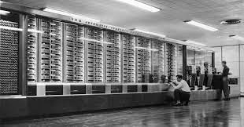

Para entendermos melhor sobre os nossos estudos, primeiro temos que entender de onde surgiu as nossas ferramentas, e com isso, vamos aprender a História da WEB.
História dos Computadores
1ª Geração (1940 – 1956)
Foi uma geração que teve seu inicio no meio da segunda guerra mmundial, e a maior parte dos computadores criados, tinha o objetivo de auxiliar os militares com cálculos, como trajeto de bala, por exemplo.
Harvard Mark 1 (1944)🖳

Este monstro pré-histórico, é considerado o primeiro computador (mesmo tendo outros projetos antes dele), ele tinha como sua base de construção válvulas, e era eletromecânico.
Colossus (1946)🖳
O Colossus foi criado na Alemanhã, foi utilizado especialmente para cálculos e criptoanalises, ou seja, ele também era responsável sobre a descriptografia das mensagens nazistas.
Eniac (1946)🖳
E da mesma forma que a Alemanha tinha o Colossus, os EUA não perderam muito tempo, e lançaram o Eniac, só que o seu principal uso, era para calcular trajetórias balísticas.🐛🐛🐛
Curiosidade - Um dos principais termos que usamos hoje, foi criado nessa época, o termo "Bug", só que este termo foi criado por conta da quantidade de insetos que apareciam nos componentes, e isso acontecia por conta da temperatura das máquinas que esquentavao muito na época.
2ª Geração (1956 – 1963)
Na segunda geração, tivemos a criação dos transistores, o que acarretou na diminuição dos computadores, e deixaram de ser enormes como o Eniac e o Colossus, e passaram a ser portáteis (tinham o tamanho de uma mesa).
Curiosidade - Para eles, a idéia de portátil na época, era conseguirem levar o computador de uma sala para outra.
3ª Geração (1964 – 1971)
"Parece que o jogo virou, não é mesmo?"
Nessa geração, tivemos criações de novos componentes, e adapações de outros para conseguir diminuir ainda mais os computadores, e começar a trazer a forma que termos hoje em dia, como:
Transistor
Capacitores
Resistores
E a partir daqui, tivemos computadores realmente menores, e agora sim eles começaram a ser portáteis.
4ª Geração (1971 - presente)
Essa geração é formada por computadores da forma que conhecemos hoje, que possuem circuitos integrados, microprocessadores, microchips...
O que mais marca a geração atual, é o surgimento do PC (Personal Computer - Computador Pessoal).
Curiosidade - Na 4ª geração, a Apple, foi responsável por uma das principais revoluções dos computadores, eles foram responsáveis pela criação do mouse.
Bônus - 5º Geração (2023?)
Algumas pessoas começaram a mencionar que já entramos na 5ª geração, com a criação de computadores quânticos, criptomoedas, IA's, metaverso, entre outras criações.(Apenas boatos até o momento)
Como Surgiu a Internet
Uma das primeiras ligações de uma grande distância que tivemos, foi em 1958, onde foi traçado um cabo entre dois continentes, para que as pessoas pudessem se comunicar com um telégrafo.
Mas fora essa pequena curiosidade, para entendermos melhor sobre a criação da Internet, precisamos entender também que ela foi criada no meio da Segunda Guerra Mundial, em que uma das princiapais competições que tivemos, foi a Corrida Espacial🚀, o que incentivou o investimento tecnológico da época.
Juntando as competições tecnológicas, e uma teoria de uma rede "galática" de Licklider, começaram a surgir pesquisas dentro da DARPA (agência de estudos tecnológicos militares), para a criação de uma rede de comunicação, e com isso, após muitos estudos, surgiu a Arpanet.
Uma das suas principais funções inicias, foi para a descentralização de backups das informações dos centros de pesquisas, para que nada fosse perdido, caso acontecesse algum desastre militar.
E no dia 29/10/1969, foi feita a primeira conexão da Arpanet, entre a Universidade da Califórnia, e o Instituto de Pesquisas de Standford, em que foi tentado transmitir a palavra "LOGIN", porém, como era tudo muito estável, só chegou a primeira sílaba, "LO", portanto, junto da primeira conexão, no dia 29/10/1969, também tivemos a primeira queda de conexão😂.
Depois que conseguiram estabilizar as conexões, começaram a surgir mais pontos, só que na época, cada computador, tinha a sua própria linguagem, e foi necessário criar o NCP (Network Control Protocol), para que houvesse uma comunicação entre eles.
Nesses primeiros passos da internet, as conexões eram feitas sempre entre dois únicos pontos, ou seja, quando a Casa A, ligava para Casa B, as outras casas ficavam incomunicáveis, e enquanto a Casa A estivesse "falando", a Casa B ficava "muda".
E em 1974, Bob Kahn, criou o protocolo TCP (Transmission Control Protocol), para conseguir quebrar todo esse processo de que somente dois computadores pudessem se comunicar, só que mesmo com esse novo protocolo, e graças ao crescimento dos pontos de conexão, o TCP não conseguia atender a todos os pontos, então Vint Cerf, criou o IP (Internetwork Protocol), e a partir dai as máquinas passaram a ser identificadas por IP, e colocaram o nome desse conjunto de TCP/IP, data que ficou conhecida como Flag Day, e ainda usamos esses mesmos protocolos até hoje, mas já estamos na 6ª versão desse conjunto que foi criado e "juntado" em 1983.
Essas mudanças auxiliaram na criação de mais redes, como MILNET, NSFNET, NASA, CSNET e ESNET.
Só que a internet ainda não era tão "formosa", como ela é hoje, mas, em 1989, Tim-Berners-Lee, criou o protocolo WWW (World Wide Web), e para que conseguissem utilizar, ele também criou um dos primeiros navegadores da internet, chamado WorldWideWeb.
Curiosidade - Em 6 de agosto de 1991, o Tim, também publicou a primeira página WEB.
E só pra fecharmos esse bloco de criações, revoluções e invenções dentro da WEB, não podemos deixar passar a criação do protocolo HTTP:// em 1993, e a criação do HTML, mais duas criações do nosso amigo Tim, e com tantas revoluções, ele hoje é considerado ao o pai da WEB.
Grandes Nomes
E não temos como passar pela história da WEB, sem passar por alguns nomes:
Grace Murray Hopper
Marinha dos Estados Unidos
Foi uma das primeiras programadoras do MARK I em 1944
Criou a linguagem de programação de alto nível* Flou-Matic (Base do COBOL)
Trouxe o termo “BUG” para a computação
Joseph Carl Robnett Licklider
Recrutado pela DARPA depois de teorizar sobre uma rede “galáctica” de computadores
Plantou a “semente” da comunicação entre dois pontos distintos através do computador (na época, os computadores já se comunicavam no mesmo prédio por meio de cabos. Ele elevou o patamar, querendo implementar esta teoria entre outros lugares)
Robert E. Kahn
Primeira apresentação pública da ARPANet
Apresentou o primeiro e-mail
Co-criador do TCP/IP
Primeiro a implantar o TCP/IP na ARPANet
Tim Berners-Lee
Inventor do WWW
Diretor do World Wide Web Consortion (W3C)
Diversas homenagens, incluindo título de cavaleiro dado Rainha Elizabeth II
Popularizou o HTTP e HTML
Marc Andreessen
(re)Inventou o navegador. O netscape Navigator feito a partir do Mosaic
Tornou o navegador “amigável”, com recursos gráficos
Deteve 90% da internet na época, mas sento superado pelo Internet Explorer anos mais tarde
Bill Gates
Fundador da Microsoft
Equipe da Microsoft criou o Internet Explorer
Tornou acessível para todos os computadores, e com isso o acesso à internet
Ele fez com que os computadores saíssem das lojas já com o Windows, e com isso o Internet Explorer, o que popularizou a sua marca ainda mais
Steve Jobs
Fundador da Apple
Concorrente direta da Microsoft
Popularizou o smartphone que conhecemos hoje, através do lançamento do iPhone em 29 de junho de 2007
Criador do mouse
*Linguagem de programação de alto nível - linguagens de programação baseadas em inglês, assim não era necessário a pessoa ficar presa nos “0” e “1”.
Client - Aquele que consome a informação de algum lugar, no nosso caso, seria o dispositivo que consome a informação (Computador, Notebook, Smartphone….)
Cliente → conecta na internet até localizar o servidor → devolve os arquivos para o "client"
O que o servidor retorna para o seu computador, são arquivos HTML, CSS, JavaScript, Imagens…, estes são os arquivos estáticos.
A partir da requisição dos arquivos, o nosso computador gera um “Cache”, ou seja, o navegador salva os arquivos estáticos, para que o computador não precise ficar toda hora requisitando os mesmos arquivos do servidor (a função refresh -F5- do computador, faz uma nova requisição destes arquivos, o que pode corrigir algum erro, ou só atualizar os arquivos).
Para trabalhar do lado do client, você deve SEMPRE se preocupar com com as resoluções dos arquivos, e os possíveis dispositivos que o client pode acessar o seu arquivo, então temos que levar em consideração o Design Responsivo ou Responsividade.
E junto disso, teremos que pensar também na compatibilidade entre os navegadores. O que é mais recomendável, sempre testar no maior número possível deles, para evitar erros.
Navegadores
São programas criados por empresas, utilizados para abrir/executar arquivos
Seguem padrões W3C, porém, sempre tem uma diferença ou outra de interpretação
Também chamados de “browsers”
Iniciou com o MOSAIC, passou pelo Netscape, e hoje temos uma variedade de navegadores disponíveis
Gratuitos
Cada navegador, tem a sua compatibilidade, e as suas definições. Ou seja, cada um recebe os dados do seu modo, e para sabermos sobre o comportamento de cada um deles, podemos ver no site W3 Schools, onde lista todos o comportamento de cada navegador, de acordo com cada comando, e se é compatível ou não com a sua TAG.
Aplicações WEB
Navegador é uma aplicação web?
- NÃO, Aplicações Web são soluções criadas que possuem a internet como meio de comunicação entre Client x Server, não sendo necessário a sua instalação.
Exemplos de aplicações WEB:
Facebook;
YouTube;
LinkedIn;
Twitter
Sempre que são acessados pelos navegador
NÃO são aplicações WEB:
Facebook;
YouTube;
LinkedIn;
Twitter
Quando são acessados através de um aplicativo instalado no seu dispositivo
Dispositivos Móveis
Fatos interessantes sobre a interação com dispositivos móveis:
9 de cada 10 latino-americanos possuem ou usam um dispositivo móvel regularmente e praticamente todos (99%) já fizeram download de algum aplicativo
22% dos usuários móveis passam 20 horas ou mais por semana na internet através dos seus smartphones
Mais de 60% dos usuários móveis de aplicativos especifícos, como LinkedIn, Twitter, Spotify e Waze, os consideram muito importantes para a sua vida cotidiana
Temos diversos tipos de servidores, entre eles temos:
LAN - Geralmente usado em empresas, onde tem um computador central, onde ficam localizados os arquivos necessários
WEB - Servidor na própria internet
Arquivos
Segurança (Firewall)
Streaming
E-mail
Web
Os servidores podem ser desde um gabinete no canto da sala que distribui os arquivos necessários para os demais computadores da residência, a até mesmo data centers (conjunto de servidores), com computadores, muito mais robustos, para grandes demandas, como os usados pela Google, por exemplo.
Hardwares e Softwares em Servidores
Hardwares (parte física), onde os principais são:
Armazemento (HDD e SSD)
Memória
Processadores
Softwares (parte lógica), onde os principais são:
Sistemas operacionais - Windows Server, Ubuntu, CentOS, Fedora, Debian, Oracle Linux (estes sistemas operacionais, são para servidores, o que acaba mudando para o que usamos nos nossos PCs)
Monitoramento
Servidores web - Apache, NGinx (servem como sistema de apoio para os sistemas operacionais, basicamente, quando um usuário tenta entrar em um site HTTP, o sistema operacional faz o funil, e o servidor web vai processar o pedido, e vai devolver com os arquivos HTML, CSS, JavaScript, Imagens, Textos Vídeos, …)
Tipos de Servidores
Arquivos
Segurança (Firewall)
Streaming
E-mail
Web server (Apache ou Nginx, por exemplo)
Proxy - servidor que faz o mapeamento de requisitos para entrar em um site, por exemplo, uma empresa que bloqueia o facebook, ela usa um servidor proxy para fazer esse funil, ou pode ser até mesmo para login
Firewall - tem um conceito parecido com o Proxy, porém ao contrário, ele é como um sistema, que com os seus requisitos, bloqueia invasões ou entradas de arquivos maliciosos
Database server - Utiliza do web ser ou aplicações web, para fazer a requisição do arquivo em questão, ele é basicamente um banco de dados, podendo ser tanto no conceito de internet ou LAN (ou intranet)
DNS (Domain Name Service) - faz a busca do nome do site, acha na lista dele o IP, e depois para o servidor de acordo com o IP
Hospedagem de Sites
Mas o que seria a hospefagem de site?
Seria colocar os seus arquivos do site, em um servidor na internet, para os clientes acessarem.
Dependendo do plano e empresa, podemos contratar com vários sites para hospedagem, com ou sem registro de domínio, só de e-mail, com ou sem multiplataforma (Windows ou Linus), com ou sem certificado SSL (conexão segura), podendo ser uma requisição HTTP, ou HTTPS (requisição criptografada, sendo mais segura que a HTTP).
Após fazer todos os passos, como o endereço e registrou o DNS, precisamos subir o site para o servidor, e pra isso, vamos precisar usar o FTP (File Transfer Protocol), que é basicamente uma conexão para enviarmos e recebermos arquivos, então, após contratar a empresa de hospedagem, registrarmos o site, a empresa que nós contratamos, vai liberar um acesso FTP pra gente. Por exemplo o Filezilla, que poderemos, enviar o arquivo HTML que criamos e transferir para o Filezilla.
Para entendermos melhor este título, e saber responder, precisamos passar por algumas etapas de aprendizado, então vamos lá!!🚀🚀🚀
O que é Uma Linguagem de Programação
Linguagem de Programação é uma linguagem escrita e formal que especifica um conjunto de instruções e regras usadas para gerar programas (softwares), podendo ser divididas em 2 lados, Server-Side e Client-Side
Client-side
As linguagens Cliet-side, são para dar estrutura ao site, ou seja, elas vão trazer um estilo mais bonito, e tentar trazer para o cliente, uma certa autônomia visual.
Um dos principais exemplos de linguagem Client-Side é o JavaScript.
Graças a criação da Engine V8 do Google, os navegadores conseguem interpretar o JavaScript, tanto no Server-side, quanto no Client-side, ou seja o V8 é um mecanismo de execução e interpretação desta linguagem. E com isso, criaram, o Node JS, que a grosso modo, é como se fosse um navegador, só que sem as janelas, ele é um programa que executa o V8 por baixo, onde é instalado no servidor, para que o V8 rode o JavaScript.
Server-side
As linguagens Server-side, são utilizadas para criar a estrutura internar do site, criando um banco de dado, lógica, e muito mais.
Vamos parafrasear, para entender melhor o contexto, assim como o Client-side seriam as paredes e decoração de uma casa, o Server-side, seria como a tubulação de água e ligações elétricas, para deixar a casa funcional.
Exemplo de linguagens server-side mais usadas:
PHP
Ruby
C#
Java
JavaScript (funciona muito bem dos dois lados)
Cada linguagem possui suas particularidades, portanto é importante estudar elas de acordo com o que você precisa, mas:
Cada linguagem tem a sua característica
Aprenda ao menos uma linguagem de cada "lado da força"
Prefira aquela em que a comunidade é mais engajada
Experimente!
HTML Não é Linguagem de Programação!
HTML é uma linguagem de programação?
Não. HTML não é linguagem de programação!
HTML é um arquivo de marcação.
Textos delimitados por nomes que o navegador consegue interpretar.
Cada nome destes delimitadores, tem uma função e comportamento específico.
Por exemplo, temos o arquivo CSV, que também é um arquivo de marcação, onde no CSV seria assim:
Aprender a instalar e configurar o ambiente de desenvolvimento. Entender o funcionamento do inspetor de elementos do navegador e criar a sua primeira página HTML.
Ferramentas Utilizadas
Visual Studio Code
Bloco de Notas
Chrome (ou outro navegador de sua preferência, na minha escolhi o Edge)
Inspetor de Elementos
Essa é uma das principais ferramentas usadas, e já vem inclusa nos navegadores, para acessar essa ferramenta, basta apertar o F12, nela você poderá ver todos os elementos daquela página, ou seja, poderemos ver como ela foi criada, quais foram os códigos HTML usados, e ter uma base de como montar outra página, ou só pra estudar.
Nele conseguimos mexer nos elementos todos da página, para podermos ter uma noção de como fazer, e quais foram as Tags usadas.
Estrutura Básica do HTML
O HTML consiste em 3 partes, onde a primeira seria o <html></html>, depois o <head></head>, e por último o <body></body>,toda tag que formos colocar no HTML, terá os sinais de < e >, e um nome dentro dela, sendo o comando que tiver o símbolo /, é a tag de fechamento.
<html>
<head></head>
<body>
</body>
</html>
Tudo que estiver no meio do <body></body>, é o que vai aparecer para o usuário, no <head></head>, que seria o cabeçalho, são coisas que ele vai carregar antes de exibir para o usuário, dentro deste, temos uma tag que mostra o título da página que vamos usar, que seria o <title></title>, e na tag <html></html>, quer dizer que tudo que esta dentro dela, vai ser um arquivo HTML.
As tags para o HTML, são as marcações usadas, para limitar, modificar, entre outras opções os textos do HTML, por exemplo a tag <i></i>, que deixa o texto em itálico, lembrando que para a tag funcionar, deve ser colocado o texto, sempre entre a abertura e o fechamento da tag.
<html>
<head>
<title>Meu Primeiro HTML</title>
</head>
<body>
<i>Meu primeiro HTML!</i>
</body>
</html>
Onde o resultado seria “Meu Primeiro HTML”.
<html>
<head>
<title>Meu Primeiro HTML</title>
</head>
<body>
<strong>Meu primeiro HTML!</strong>
</body>
</html>
Onde o resultado seria “Meu Primeiro HTML”.
Ou se quisermos colocar as duas tags, é só colocar o texto no meio delas:
<html>
<head>
<title>Meu Primeiro HTML</title>
</head>
<body>
<strong><i>Meu primeiro HTML!</i></strong>
</body>
</html>
Onde o resultado seria "Meu primeiro HTML!"
E podemos deixar tudo em negrito, e só a sigla HTML em itálico:
<html>
<head>
<title>Meu Primeiro HTML</title>
</head>
<body>
<strong>Meu primeiro <i>HTML!</i></strong>
</body>
</html>
E o resultado é “Meu Primeiro HTML!”
Mas nem todas as tags tem fechamento, por exemplo a tag <input>, ele por si, já é um campo, por exemplo:
<html>
<head>
<title>Meu Primeiro HTML</title>
</head>
<body>
<strong>Meu primeiro <i>HTML!</i></strong>
<input type="text">
</body>
</html>
Que vai criar um campo para digitação dentro do HTML:
Meu Primeiro HTML!
Outro exemplo seria a tag <img>, que tambem não possui fechamento.
Atributos das Tags
Atributos, são configurações que usamos dentro das tags, para mudar o comportamento delas.
Basicamente, são propriedades que colocamos nas tags, para modificar algumas configurações, podendo ser atributos globais, ou mais específicos.
Por exemplo, dentro da tag <strong></strong>, podemos colocar o atributo id, no caso, ele irá categorizar um elemento, ou grupo de elementos, para que possamos mexer em todos de uma vez, sendo usado principalmente como um identificador.
<html>
<head>
<title>Meu Primeiro HTML</title>
</head>
<body>
<strong id="título">Meu primeiro <i>HTML!</i></strong>
<input type="text">
</body>
</html>
Fazendo com que toda vez que pesquisamos o id "título", sempre localize esse, ou os outros títulos que colocamos o mesmo id.
Outra tag, seria a style, que pode nos auxiliar, colocando elementos de estilo, como se fosse o CSS, dentro do próprio HTML:
<html>
<head>
<title>Meu Primeiro HTML</title>
</head>
<body>
<strong style="color: blue;">Meu primeiro <i>HTML!</i></strong>
<input type="text">
</body>
</html>
Que vai trazer o seguinte resultado:
Meu primeiro HTML!
E outro atributo de CSS que podemos implementar direto no HTML, é o class, que vai agrupar alguns elementos para que possamos mudar e configurar eles de uma forma pré-definida:
<html>
<head>
<title>Meu Primeiro HTML</title>
</head>
<body>
<strong class="título-principal">Meu primeiro <i>HTML!</i></strong>
<input type="text">
</body>
</html>
A partir daí, todos os itens que estiverem com a mesma classificaçãos, poderemos confirgurar juntos, de uma só vez.
E temos outros atributos que são mais específicos, como os do próprio <input>, vimos anteriormente o <input type="text">, que faz um campo texto no HTML, só que podemos usar outro, como o "number", que vai trazer um campo para inserir um numero.
<html>
<head>
<title>Meu Primeiro HTML</title>
</head>
<body>
<strong class="título-principal">Meu primeiro <i>HTML!</i></strong>
<input type="number">
</body>
</html>
Que vai ficar assim:
Meu primeiro HTML!
E um outro atributo bem curioso, seria o "color", que vai abrir um seletor de cor:
<html>
<head>
<title>Meu Primeiro HTML</title>
</head>
<body>
<strong class="título-principal">Meu primeiro <i>HTML!</i></strong>
<input type="color">
</body>
</html>
Meu primeiro HTML!
Os atributos mais comuns de serem usados na tag input, vão ser o "text e o "number".
E um atributo muito importante que será usado, é o da tag <img>, ela mesma não funciona sem os atributos, e para que ela funcione corretamente, precisaremos usar o atributo src="", onde dentro das áspas, podemos colocar o endereço de uma imagem, sendo de uma pasta, ou um link de imagem:
<html>
<head>
<title>Meu Primeiro HTML</title>
</head>
<body>
<strong class="título-principal">Meu primeiro <i>HTML!</i></strong>
<input type="text">
<img src="https://th.bing.com/th/id/OIP.iocNgHJ8Zv57RtXqt2Bs5AHaE8?w=270&h=181&c=7&r=0&o=5&dpr=1.3&pid=1.7">
</body>
</html>
Meu primeiro HTML!
E para configuararmos até o tamanho da imagem, temos o atributo width="", que vai ser utilizado para modificar a largura:
<html>
<head>
<title>Meu Primeiro HTML</title>
</head>
<body>
<strong class="título-principal">Meu primeiro <i>HTML!</i></strong>
<input type="text">
<img width="280" src="https://th.bing.com/th/id/OIP.iocNgHJ8Zv57RtXqt2Bs5AHaE8?w=270&h=181&c=7&r=0&o=5&dpr=1.3&pid=1.7">
</body>
</html>
Meu primeiro HTML!
Textos
Primeira tag a ser aprendida na produção de textos é a <h1></h1>, que significa header, ou título, onde esta mesma tag pode ser elaborada até o h6, em que cada número representa um grau de título, subtítulo, …
<html>
<head>
<title>Meu Primeiro HTML</title>
</head>
<body>
<h1>DIO.me</h1>
<h2>Implemente o seu futuro global agora!</h2>
</body>
</html>
DIO.me
Implemente o seu futuro global agora!
Basicamente tudo que for título, vamos colocar na tag H.
Agora quando formos colocar um novo parágrafo, usaremos a tag <p></p>, e para cada novo parágrafo que formos abrir, sempre colocar uma nova tag P:
<html>
<head>
<title>Meu Primeiro HTML</title>
</head>
<body>
<h1>DIO.me</h1>
<h2>Implemente o seu futuro global agora!</h2>
<p>
Implemente o seu futuro global agora!
</p>
</body>
</html>
DIO.me
Implemente o seu futuro global agora!
Domine as tecnologias utilizadas pelas empresas mais inovadoras do mundo e encare seu novo desafio profissional, evoluindo em comunidade com os melhores experts.
O próprio navegador cria a formatação, direto do arquivo HTML, mas podemos mudar de acordo com o CSS que vamos usar, que é o mais recomendável.
Caso você queira colocar uma citação de um livro, por exemplo, também temos como colocar está opção, basta colocar a tag <blockquote></blockquote>, assim o navegador vai reconhecer como uma citação o texto que você colocar:
<html>
<head>
<title>Meu Primeiro HTML</title>
</head>
<body>
<h1>DIO.me</h1>
<h2>Implemente o seu futuro global agora!</h2>
<p>
Implemente o seu futuro global agora!
</p>
<blockquote>O jeito DIO._ para você ganhar destaque mais rápido no mercado.</blockquote>
</body>
</html>
DIO.me
Implemente o seu futuro global agora!
Domine as tecnologias utilizadas pelas empresas mais inovadoras do mundo e encare seu novo desafio profissional, evoluindo em comunidade com os melhores experts.
O jeito DIO._ para você ganhar destaque mais rápido no mercado.
Ele meio que desprende do texto todo, e deixa mais pro lado, pra dar um visual diferente
Durante a elaboração do texto podemos modificar algumas formas do que queremos, por exemplo, colocando algumas palavras em especifico em negrito, com a tag <strong></strong>, com a tag <u></u>, que significa underline (ou a grosso modo modo “linha embaixo”), podemos colocar sublinhado, colocar a nossa citação em itálico com a tag <i></i>, destacar uma parte do texto com a tag <mark></mark>, para que ela fica como se fosse grifada com um marca texto, e lá em tecnologias, também colocar um asterisco para dar um destaque ainda maior e colocar como se tivesse uma anotação no rodapé da página com a tag <sup></sup>:
<html>
<head>
<title>Meu Primeiro HTML</title>
</head>
<body>
<h1>DIO.me</h1>
<h2>Implemente o seu futuro global agora!</h2>
<p>
Domine as <strong><u>tecnologias</strong></u>utilizadas pelas empresas
mais inovadoras do mundo e encare seu novo desafio profissional, evoluindo
em comunidade com os melhores experts.
</p>
<blockquote>
<i>O jeito DIO._ para você ganhar destaque mais rápido no mercado.</i>
</blockquote>
<h2>Aprenda tecnologias emergentes</h2>
<p>
Os nossos cursos e programas de formação são criados em conjunto com
especialistas das empresas <mark>mais inovadoras do mundo</mark>, aplicando
uma metodologia para que você domine as tecnologias utilizadas no mercado e
também mergulhe nas novas e mais atuais tecnologias que impactarão o futuro
dos negócios digitais.
</p>
<h2>Pratique com desafios de códigos</h2>
<p>
Potencializamos o seu talento e primoramos as suas habilidades de pensamento
computacional e resolução de desafios reais através de experiências práticas
de codificação em nossa plataforma personalizada e exclusiva.
</p>
</body>
</html>
DIO.me
Implemente o seu futuro global agora!
Domine as tecnologias* utilizadas pelas empresas mais inovadoras do mundo e encare seu novo desafio profissional, evoluindo em comunidade com os melhores experts.
O jeito DIO._ para você ganhar destaque mais rápido no mercado.
Aprenda tecnologias emergentes
Os nossos cursos e programas de formação são criados em conjunto com especialistas das empresas mais inovadoras do mundo, aplicando uma metodologia para que você domine as tecnologias utilizadas no mercado e também mergulhe nas novas e mais atuais tecnologias que impactarão o futuro dos negócios digitais.
Pratique com desafios de códigos
Potencializamos o seu talento e primoramos as suas habilidades de pensamento computacional e resolução de desafios reais através de experiências práticas de codificação em nossa plataforma personalizada e exclusiva
Incrivel tudo que podemos fazer com algumas tags e atributos nos lugares corretos, não é mesmo?
Listas Ordenadas e Não Ordenadas
Lista Ordenada - Ordened List
A tag para as listas ordenadas vai ser <ol></ol>, está lista não aceita que coloquemos qualquer texto no meio dela, ela precisa de “tags filhas”, no caso, ela precisa ser implementada com a tag <li></li>, que seria list item (item da lista), e para cada item que precise por, vamos ter que colocar um novo “li”, e para “li” que eu coloque no meio desta tag, ela mesma já inclui uma “ordem” para os itens:
Link - ligação, ou seja, quando acessamos um link em uma página na internet, estamos criando uma ligação entre uma página e outra.
No caso do HTML, vamos usar a tag ancor (âncora), do conceito de ir para algum lugar em específico, ou seja, estamos ancorando em algum lugar, e a tag será <a href="”></a>, onde no meio das aspas, vamos colocar o link do site, e no meio da tag, a explicação de onde o link vai dar, por exemplo o nome do site:
<html>
<head>
<title>Meu Primeiro HTML</title>
</head>
<body>
<h1>Meu Primeiro Site</h1>
<ul>
<li><a href="http://dio.me">Dio.me</a></li>
</ul>
</body>
</html>
E um atributo muito interessante, que podemos usar dentro da tag “a”, é o target="”, que vai abrir 4 opções, mas vamos usar apenas 2 opções, sendo elas o "_self”, que já é o padrão usado pelo HTML, e o "_blank”, que vai abrir uma nova aba, quando atribuirmos a tag “a”.
<html>
<head>
<title>Meu Primeiro HTML</title>
</head>
<body>
<h1>Meu Primeiro Site</h1>
<ul>
<li><a href="http://dio.me" target="_blank">Dio.me</a></li>
</ul>
</body>
</html>
E um outro atributo interessante, é o title="”, que vai trazer a informação que colocarmos nele, amostra quando passarem o mouse por cima, conhecido como touch tip:
<html>
<head>
<title>Meu Primeiro HTML</title>
</head>
<body>
<h1>Meu Primeiro Site</h1>
<ul>
<li><a href="http://dio.me" title="Clique aqui" target="_blank">Dio.me</a></li>
</ul>
</body>
</html>